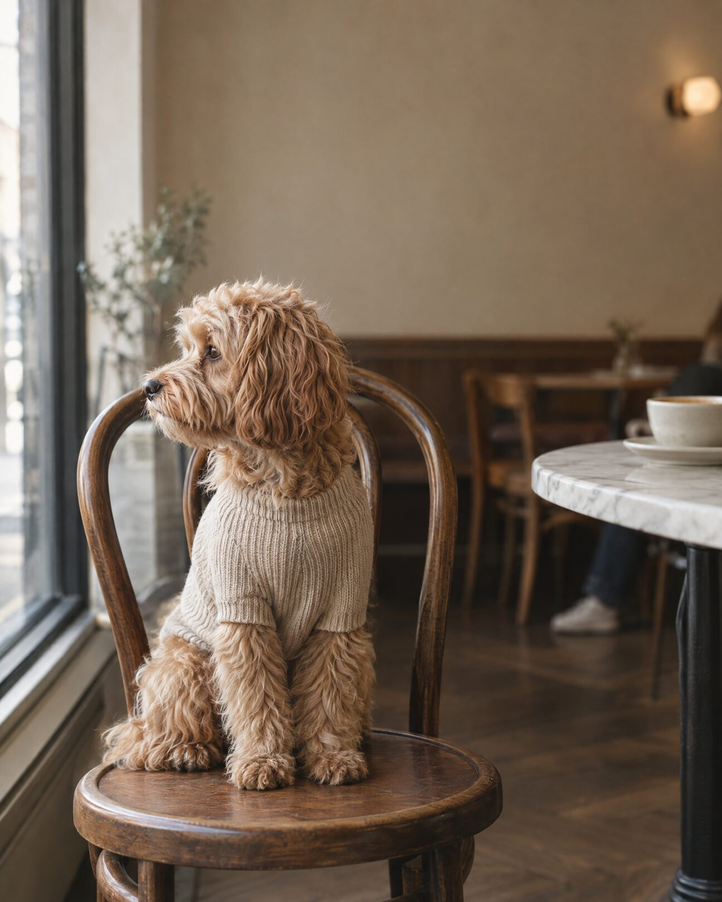
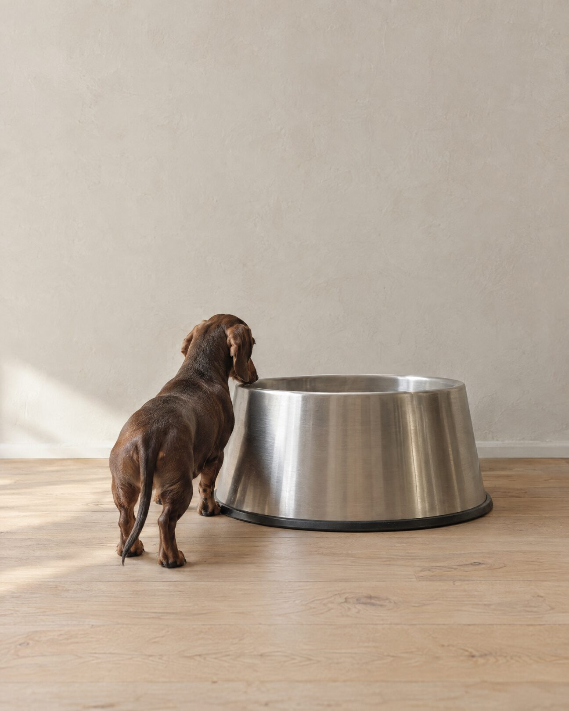
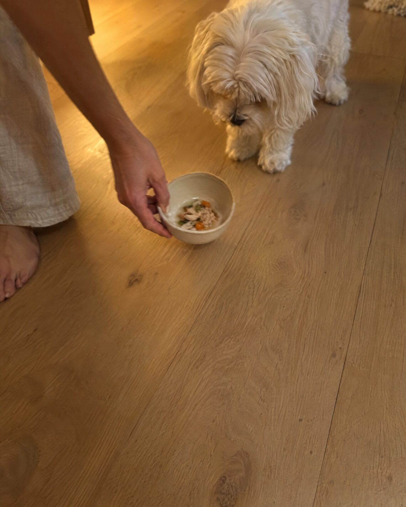
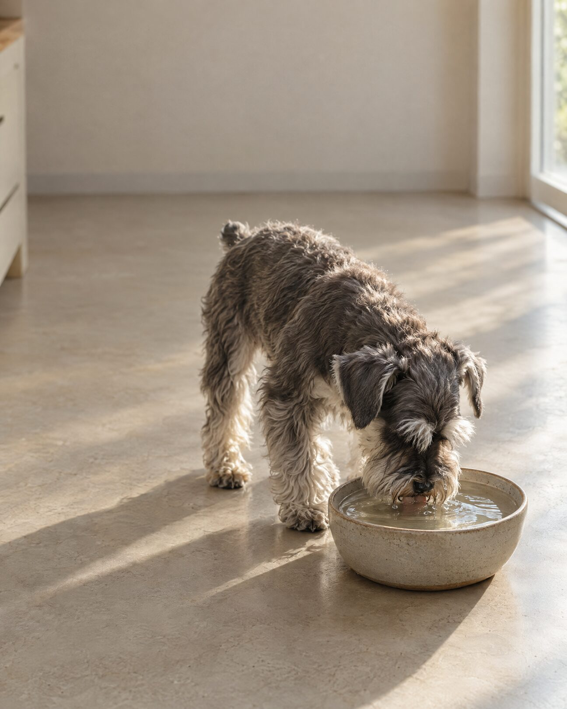
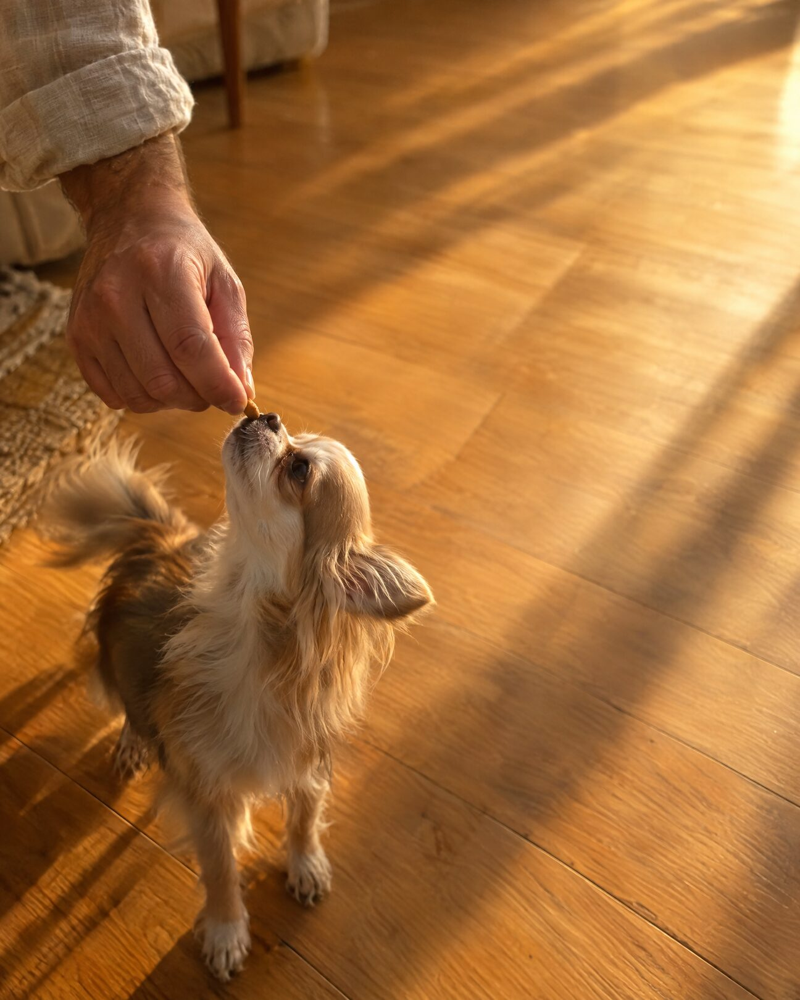
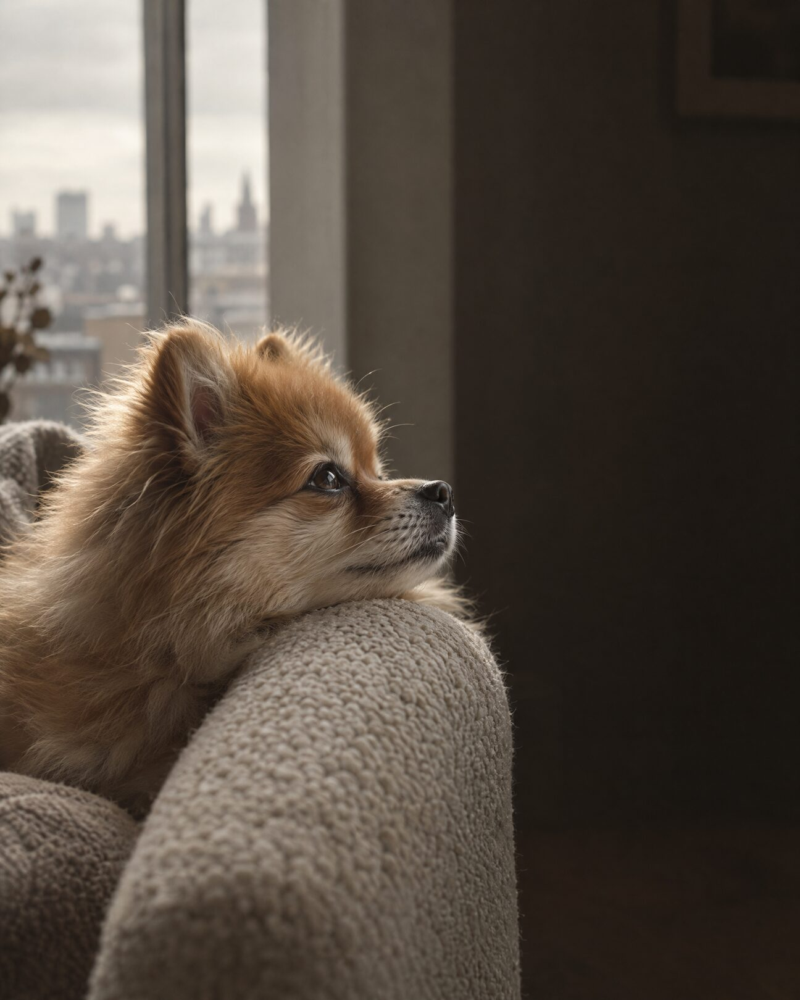
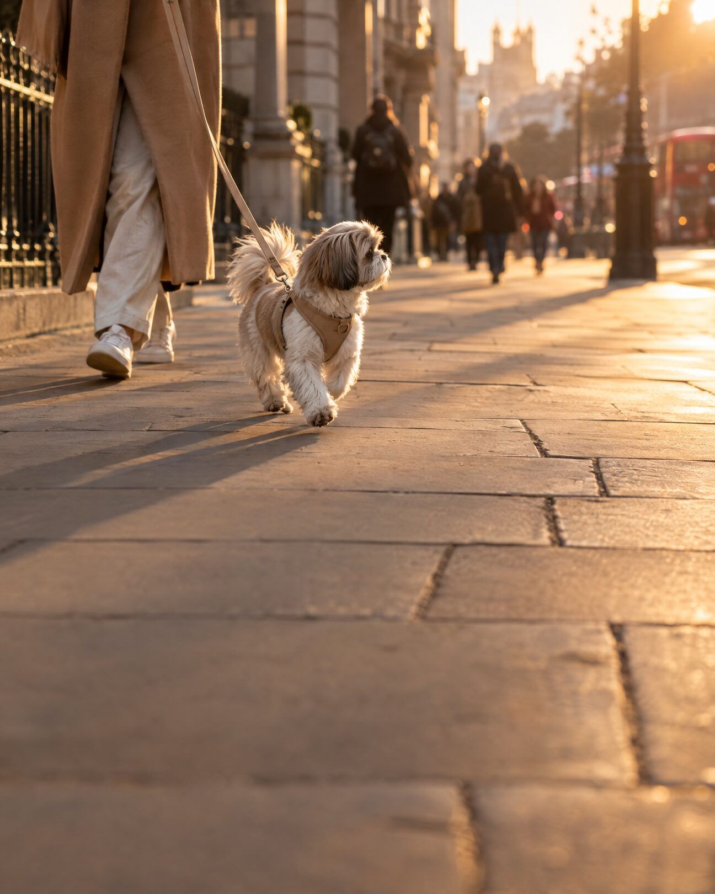

Seven editorial frames at 1080 × 1350. One idea per swipe, each anchored to the empty half of its photograph.

They are not a smaller version of the same animal. They run on a tighter system.

Most dog food is designed for big dogs. Small-breed versions are usually the same recipe, made smaller.
Smaller kibble. Same food.

Less food in. So every bite has to do more.

3 spoons in 10 do the work.

A nibble to you. A third of their day.

Every choice carries more weight when there is less of it.

✦ Small breed only. Big care always.
You already knew they were different. This is why. Smaller stomach. Tighter margins. Every bite doing more. Most food is built for a bigger dog and shrunk down. That isn't the same thing. ✦ Small breed only. Big care always.